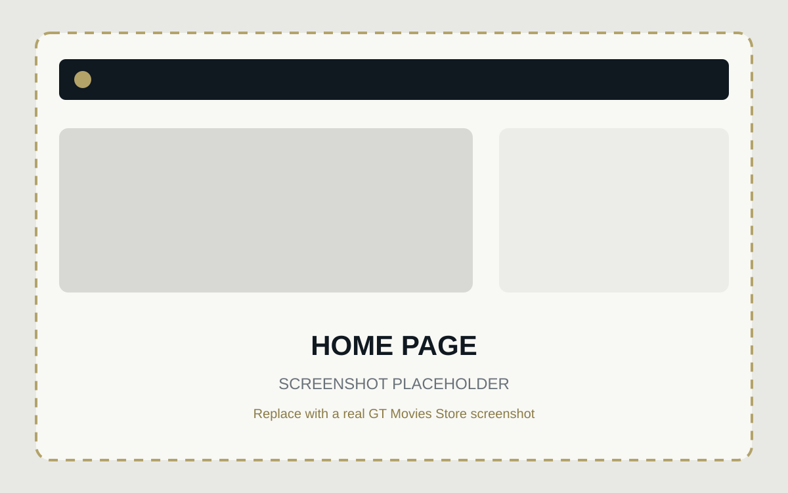
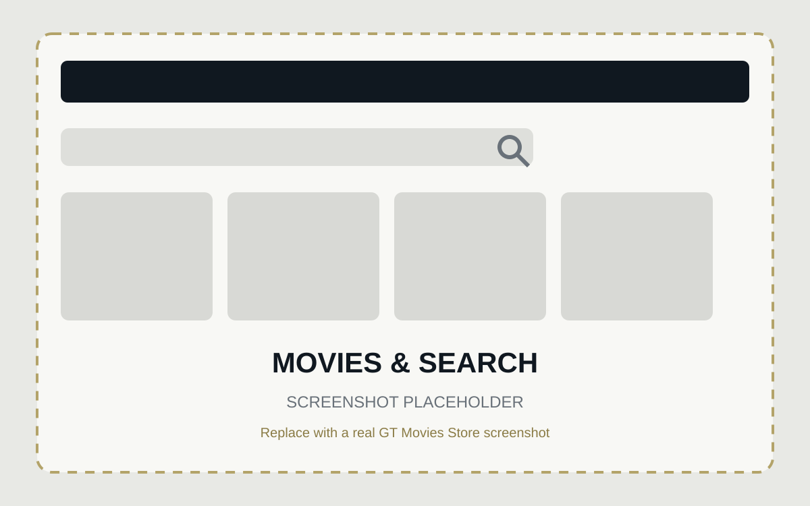
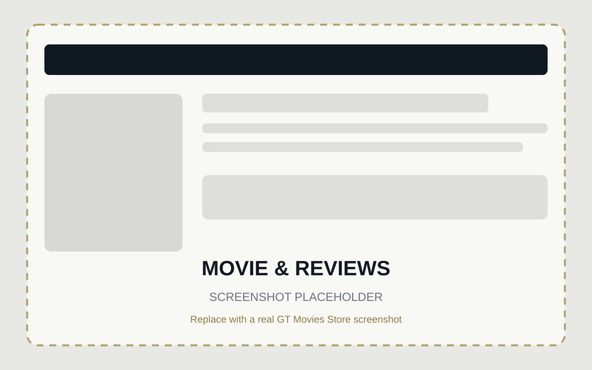
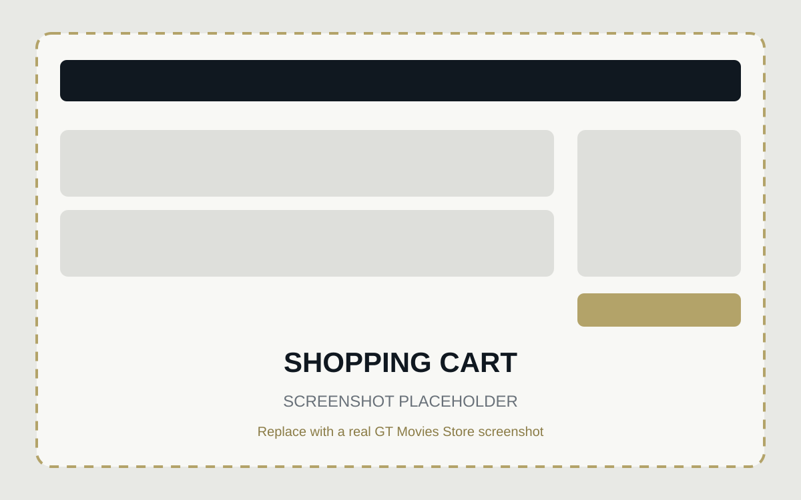
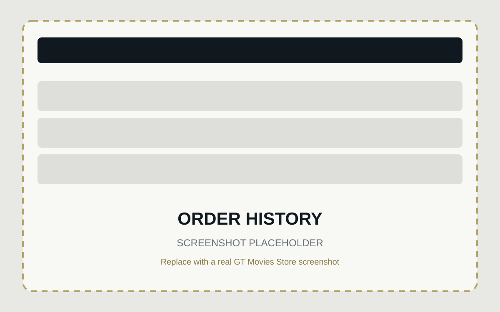
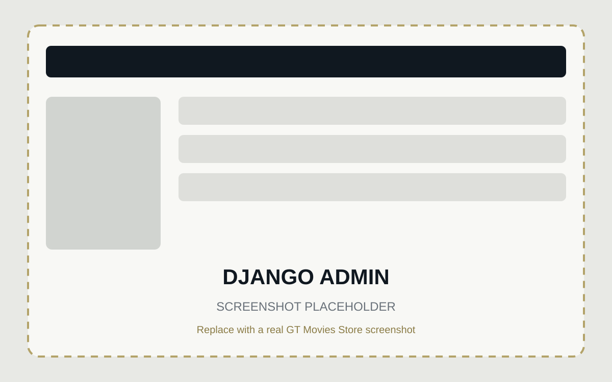

Introduction & accounts
The information, registration, and login screens establish the application and give each user a secure account.
Akshaj Nadimpalli · Georgia Tech project
A full-stack Django movie storefront featuring authentication, reviews, shopping cart sessions, purchases, order history, administration, and cloud deployment.
Live application hosted separately on PythonAnywhere.
01 · Introduction
I’m Akshaj Nadimpalli, a Georgia Tech student and the developer of GT Movies Store.
This portfolio documents how I translated 21 required user stories into a complete Django application—from data modeling and authentication to purchases, administration, and cloud deployment.
My goal was to build each requirement as part of one connected experience while keeping the application straightforward to use and maintain.
02 · GT Movies Store description
GT Movies Store is a full-stack web application where users can browse a movie catalog, search by title, inspect a movie’s details, create an account, and contribute reviews. Authentication-aware screens show the right actions for guests and signed-in users, while authorization rules ensure that people can only edit or delete reviews they created.
The shopping flow uses Django sessions to remember selected movies and quantities. Users can review totals, clear the cart, complete a purchase, and later see a persistent order history. Behind the customer-facing screens, Django Admin provides one place to manage users, movies, reviews, orders, and order items.
The information, registration, and login screens establish the application and give each user a secure account.
The listing, title search, and detail screens move users from browsing to a specific movie and its information.
Movie pages support reading and writing reviews, owner-only editing and deletion, and inappropriate-review reporting.
The cart handles quantities, totals, and clearing; checkout creates persistent orders that appear in order history.
Responsive browser screens support internet access, while Django Admin covers users, movies, reviews, and orders.
Project features
Project screen tour
Placeholders — not application screenshots






Requirement coverage
21 / 21complete
03 · Process description
I followed an incremental, feature-by-feature approach. I started with the project structure and data models, then added one complete user flow at a time. Each step connected the URL, view, model or session data, template, and navigation before I moved to the next requirement.
When I had a question, I first narrowed it to the layer involved—routing, data, forms, permissions, sessions, or templates. I used the course book as the roadmap, checked Django documentation when I needed more detail, and tested the smallest version of the behavior before integrating it into the full application.
Django project/app setup
Templates and static files
Movie models and admin
Database queries and search
Authentication
Review CRUD and authorization
Sessions and cart
Orders and items
Checkout and order history
PythonAnywhere deployment
I completed connected user flows rather than building every model, view, or template in isolation.
Django Admin and the browser helped me confirm that form submissions, reviews, purchases, and relationships persisted correctly.
I reproduced issues in a smaller context, confirmed the expected Django behavior, and then applied the fix to the full flow.
04 · Video demonstration
This walkthrough demonstrates account access, movie discovery, review management, the session-based cart, checkout, order history, and Django Admin.
05 · Architecture
homeProject information and landing content.
moviesCatalog, search, details, and reviews.
accountsRegistration and authentication flows.
cartSession cart, checkout, orders, and history.
User→Orders
Order→Items→Movie
User→Reviews→Movie
06 · Technologies
07 · What I learned
This project helped me understand how Django’s MVT architecture connects a browser request to URLs, views, ORM queries, models, and templates. Designing foreign-key relationships for movies, reviews, orders, and items made database modeling feel much more concrete.
I also got practical experience with GET and POST requests, forms and CSRF protection, authentication versus authorization, session-based state, and full CRUD workflows. Using Git and GitHub throughout the project—and then deploying it to the cloud—showed me how the pieces of a web application move from local development to something other people can use.
08 · Project links
The application is hosted separately from this portfolio.
Live application hosted on PythonAnywhere.